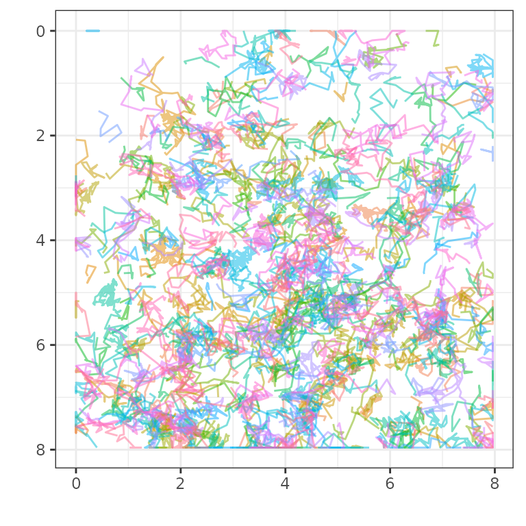

TrackMateR is an R package to analyse TrackMate XML outputs.
TrackMate is a single-particle tracking plugin for ImageJ/Fiji. The standard output from a tracking session is in TrackMate XML format.
The goal of this R package is to import all of the data associated with the final filtered tracks in TrackMate for further analysis and visualization in R.
Once you have installed R and RStudio Desktop, you can install TrackMateR using devtools
# install.packages("devtools")
devtools::install_github("quantixed/TrackMateR")A basic example is to load one TrackMate XML file and analyse it. This would typically be a tracking session associated with a single movie (referred to here as a single dataset).
library(ggplot2)
library(TrackMateR)
# an example file is provided, otherwise use file.choose()
xmlPath <- system.file("extdata", "ExampleTrackMateData.xml", package="TrackMateR")
# read the TrackMate XML file into R using
tmObj <- readTrackMateXML(XMLpath = xmlPath)
#> Units are: 1 pixel and 0.07002736 s
#> Spatial units are in pixels - consider transforming to real units
#> Collecting spot data. Using 2 cores
#> Matching track data...
#> Calculating distances...With the example data, we got a warning telling us that the data is scaled as pixels. If your TrackMate data is correctly calibrated you can skip this step but if you need to recalibrate it:
# Pixel size is 0.04 um and original data was 1 pixel, xyscalar = 0.04
tmObj <- correctTrackMateData(dataList = tmObj, xyscalar = 0.04, xyunit = "um")
#> Correcting XY scale.With this done, we can have a look at the data.
plot_tm_allTracks(tmObj)
So, after reading in the TrackMate file with
readTrackMateXML() we have an object which we can visualise
using plot_tm_allTracks().
TrackMateR can generate several different types of plot individually
using commands like plot_tm_allTracks() or it can make them
all automatically and create a report for you.
reportDataset(tmObj)
#> Warning in sqrt(estSigma2): NaNs producedIn the next section you will see how to do more advanced analysis,
and pick and choose what outputs you will make. However, it is possible
to change the defaults of reportDatasets() to tune things a
bit more while still making a nice report. For example,
reportDatasets(tmObj, radius = 100) will use the defaults
for everything except the radius for searching for neighbours in the
track density analysis. Parameters that can be changed are:
Perhaps the default options do not suit your needs. With just a few more lines of code, you can tweak the report to do the analysis you want.
Below you will see that the dataset we read in was not scaled correctly. After reading in, we rescale it and then we start to generate the report.
The report shows analysis of mean squared displacement, jump distance
and track density, among other plots. These three things must be
calculated first using calculateMSD(),
calculateJD() and calculateTrackDensity. This
allows you to have some control over the analysis, for example setting
the search radius for Track Density. Finally, these items can be fed
into makeSummaryReport() as shown below, and the report is
created.
# we can get a data frame of the correct TrackMate data
tmDF <- tmObj[[1]]
# and a data frame of calibration information
calibrationDF <- tmObj[[2]]
# we can calculate mean squared displacement
msdObj <- calculateMSD(df = tmDF, method = "ensemble", N = 3, short = 8)
# and jump distance
jdObj <- calculateJD(dataList = tmObj, deltaT = 1)
# and look at the density of tracks
tdDF <- calculateTrackDensity(dataList = tmObj, radius = 1.5)
# and calculate fractal dimension
fdDF <- calculateFD(dataList = tmObj)
# if we extract the name of the file
fileName <- tools::file_path_sans_ext(basename(xmlPath))
# we can send all these things to makeSummaryReport() to get a nice report of our dataset
makeSummaryReport(tmList = tmObj, msdList = msdObj, jumpList = jdObj, tddf = tdDF, fddf = fdDF,
titleStr = "Report", subStr = fileName, auto = FALSE)Note that makeSummaryReport can take additional
arguments to give the user some control over fitting to jump distance.
For example, nPop = 1 will fit one population instead of
two (the dafault), and init = list() can be a list of
guesses for the initial fit.
This vignette described the analysis of a single dataset. For
analysis of more than one dataset, see
vignette("comparison")